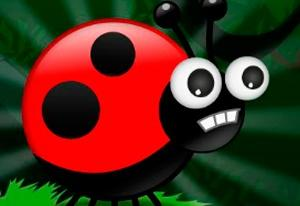

Esta página debería contener los primeros 10 números de la secuencia de Fibonacci, sin embargo, hay bichos que están estorbando al programa que debería hacerlo.
Usa las Chrome Developer Tools para encontrar en qué líneas están los bichos, marca un comentario del error que encontraste y si puedes, ¡corrígelos!
Considera que además pueden faltarle otras cosas a la página que también causen problemas con el CSS.
